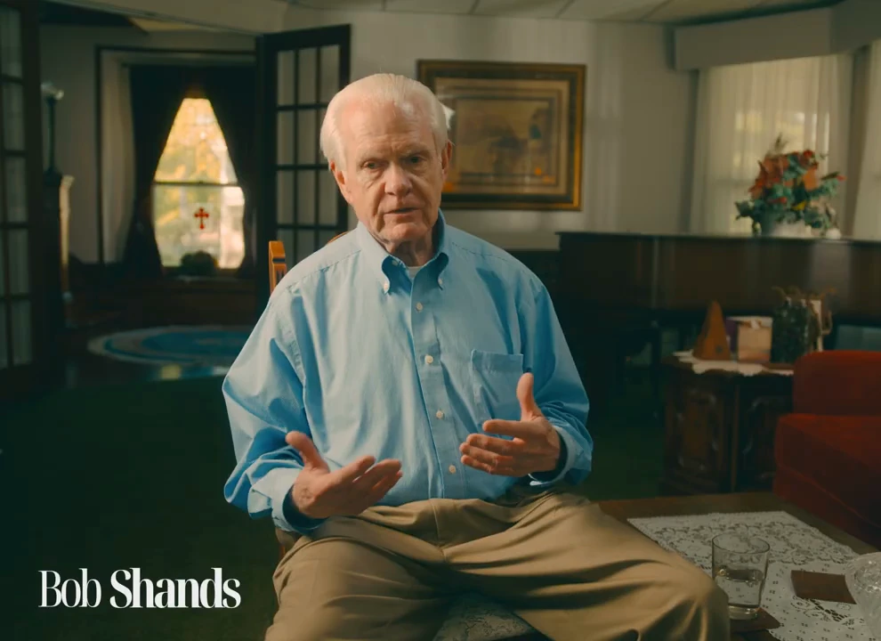
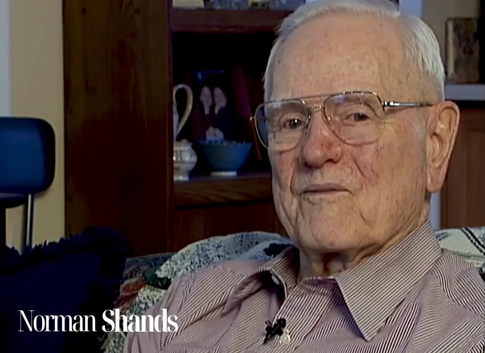
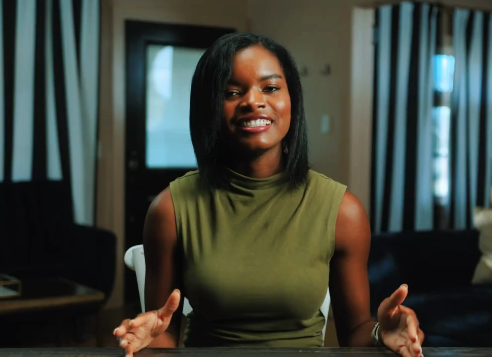
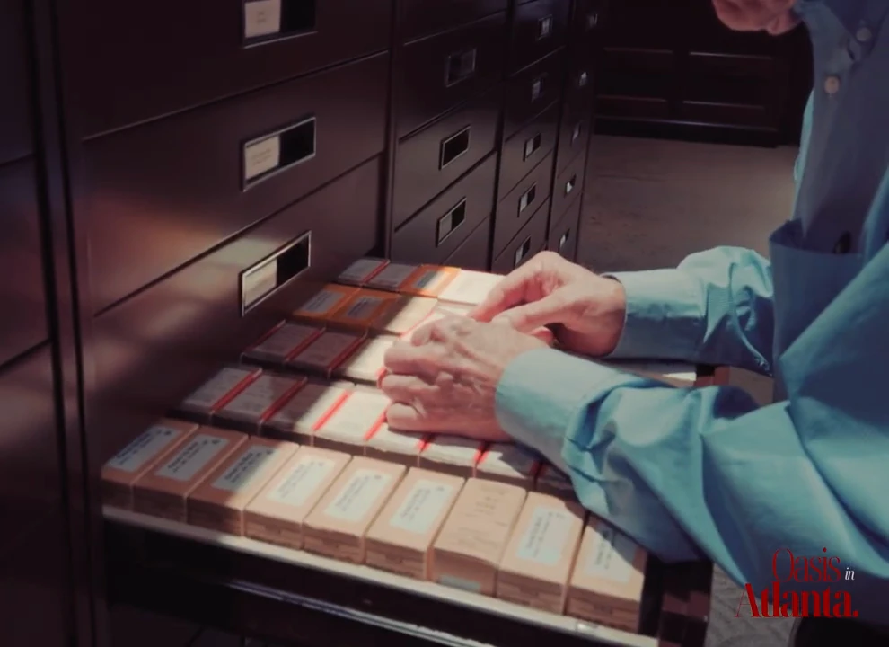
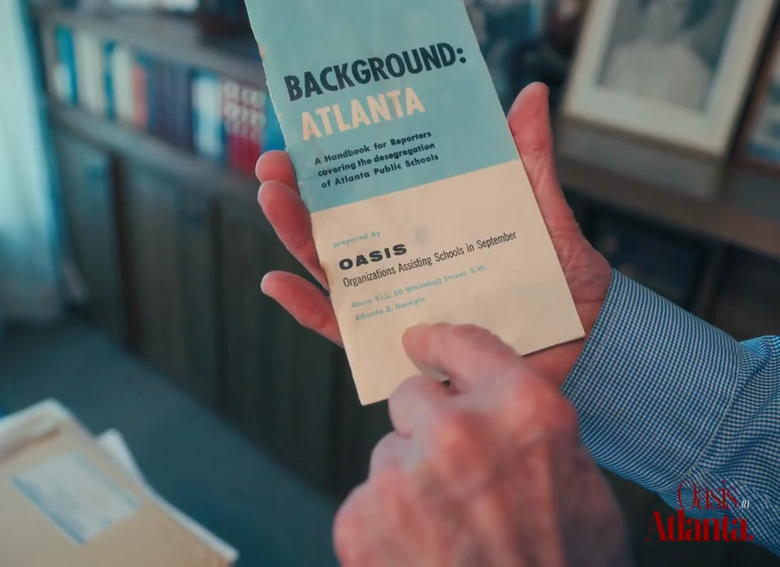

Released
Oasis in Atlanta
A pastor, his son Bob, and a family archive of Atlanta's civil rights years.

About the film
Pastor Norman Shands' story sits where his family's memory meets the civil rights movement. Oasis in Atlanta draws on his recorded recollections and the archive preserved by his son, Bob, to explore Christian faith, racial integration and Atlanta's response to school desegregation.
The film places Norman's testimony and Bob's memories beside photographs, newspapers and historical footage. Its chapters trace the ministers' manifesto and the work of OASIS, Organizations Assisting Schools in September. Tamera Nealy adds her contemporary perspective, while Bob frames his father's work and his own search for the records as a story of faith in action.
From the film




Production
Recorded family testimony anchors this wider historical documentary. Photographs, saved papers and archive footage connect those personal recollections with public events.
- RedRiver
- Production, direction, camera, edit
- Co-credited with
- Oasis Films and Paris Campaigns